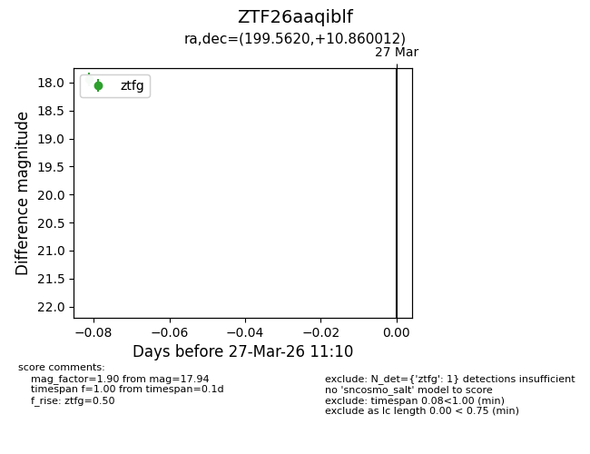
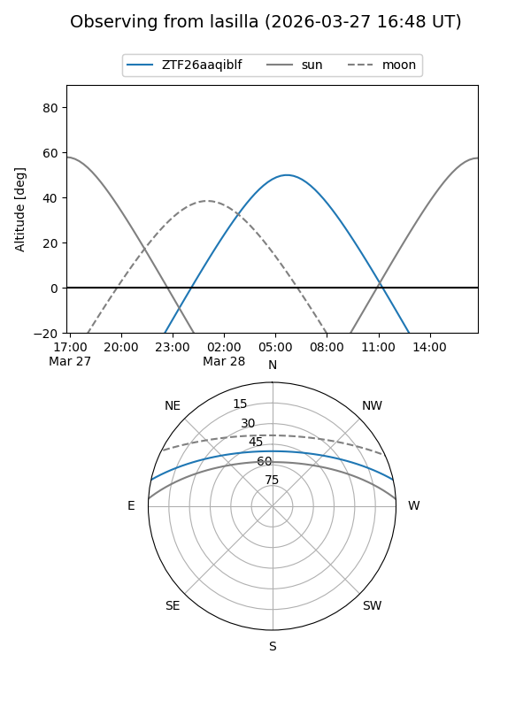
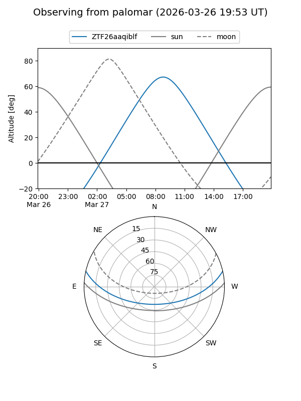

ZTF26aaqiblf
Target ZTF26aaqiblf at 2026-03-27 11:13
Aliases and brokers:
FINK: link
Lasair: link
ALeRCE: link
alt names
ZTF26aaqiblf (ztf,fink_ztf)
Coordinates:
equatorial (ra, dec) = 199.5620,+10.86001
equatorial (HMS+DMS) = 13:18:14.88,+10:51:36.04
galactic (l, b) = (325.4066,+72.55154)
Flags:
Photometry:
last ztfg=17.94
1 ztfg detections
Lightcurve

Visibility


Additional plots